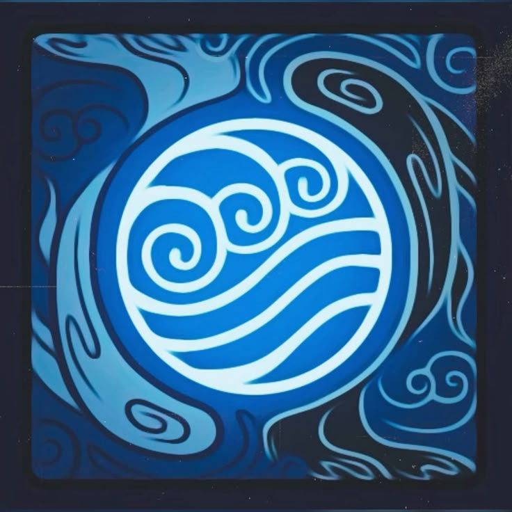
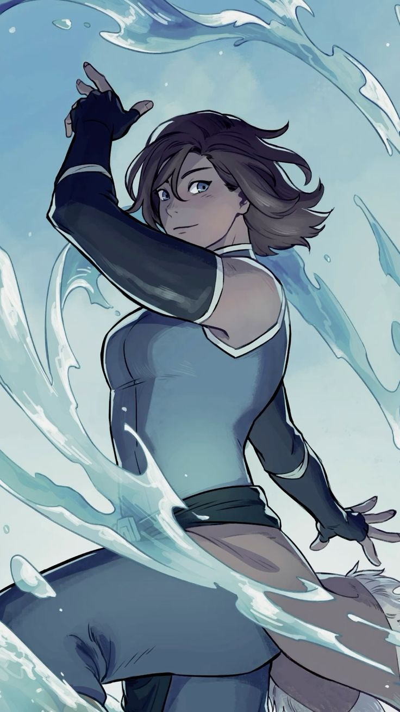
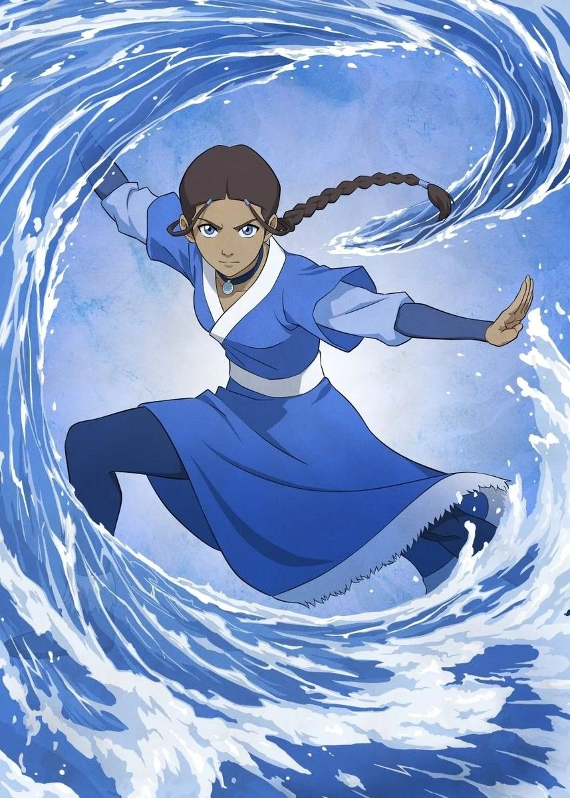
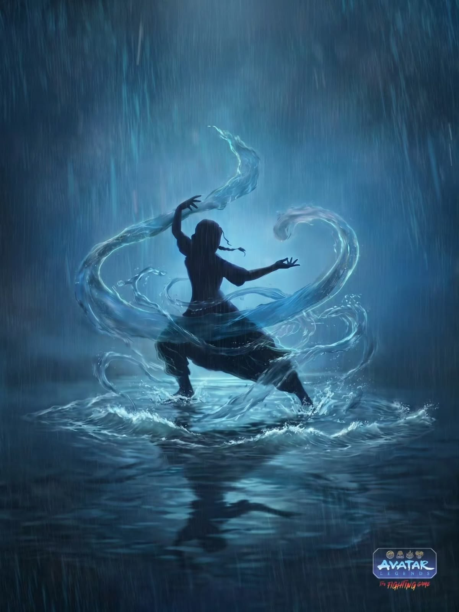

Água
A água é um dos quatro elementos do mundo Avatar. Seus dominadores utilizam os movimentos do corpo para controlar e manipular a água de diferentes maneiras.
Conheça a água ↓
O poder da água
A dominação de água permite que seus usuários controlem a água presente ao seu redor. Os movimentos utilizados são geralmente fluidos e contínuos, acompanhando o comportamento natural das ondas.
Os dominadores de água podem utilizar seus conhecimentos tanto para defesa quanto para ataque, criando diferentes formas e técnicas durante um combate.
Além disso, a água possui uma característica especial: ela pode ser utilizada para ajudar outras pessoas, tornando a dominação uma técnica versátil.


Katara
Katara é uma das principais dominadoras de água da história de Avatar. Durante sua jornada, ela desenvolveu suas habilidades e se tornou uma importante integrante da Equipe Avatar.
Dominação
Katara desenvolveu grande habilidade na manipulação da água.
Cura
Ela também aprendeu técnicas de cura utilizando a água.
Determinação
Sua força de vontade foi essencial durante sua jornada.
Técnicas da Água
A dominação de água possui diferentes técnicas que podem ser utilizadas dependendo da situação.
Gelo
A água pode ser transformada e controlada na forma de gelo.
Cura
Algumas técnicas utilizam a água para ajudar na recuperação de ferimentos.
Vapor
A água pode ser transformada em vapor, permitindo criar neblina e dificultar a visão.
Purificação Espiritual
Técnicas relacionadas à água podem ser utilizadas para purificar energias espirituais.

A força da água
A água representa adaptação e movimento. Em vez de simplesmente enfrentar um obstáculo de maneira direta, um dominador pode aprender a se adaptar à situação.
Essa característica faz com que a dominação de água seja bastante versátil e permita diferentes estratégias.
Assim como a água encontra diferentes caminhos, seus dominadores precisam aprender a se adaptar aos desafios encontrados durante sua jornada.
Fluidez, adaptação e equilíbrio
A água é muito mais do que apenas um elemento. Ela representa a capacidade de mudar, se adaptar e continuar seguindo em frente.
A história de personagens como Katara mostra como conhecimento, determinação e prática podem transformar um dominador em alguém extremamente habilidoso.
A água encontra seu caminho.
VOLTAR AO INÍCIO →